Mixed-up: Music and the Art School
A new exhibition curated by Marianna Tsionki, Associate Professor, Leeds Arts University, and Gavin Butt, Professor of Fine Art, Northumbria University, explores the phenomenon of Leeds art school bands in the late 70s and early 80s.
MIXED UP: MUSIC AND THE ART SCHOOL
14 February – 17 April 2025
Blenheim Walk Gallery, Leeds Arts University
The Arts School Dance Never Ends
Central to the exhibition is how punk and post-punk DIY culture related to the teaching and resources of three Leeds art schools; Jacob Kramer College , University of Leeds, and Leeds Polytechnic. Rejecting traditional hierarchies and commercial pressures, students at these institutions embraced independence and collective creativity, profoundly shaping popular music culture.
Image gallery of the exhibition launch
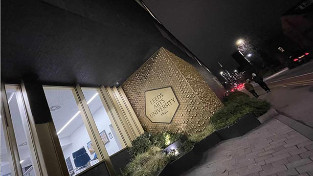
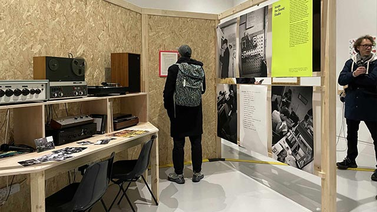
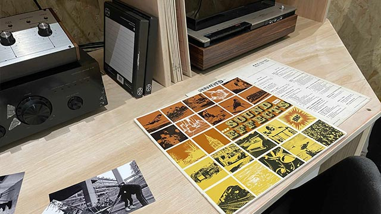
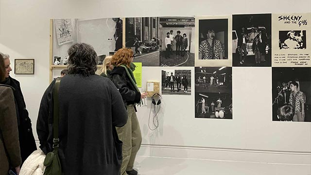
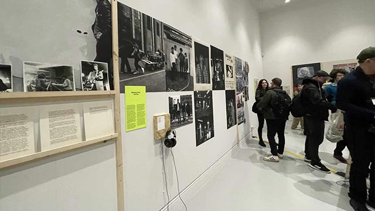
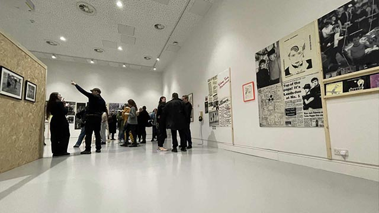
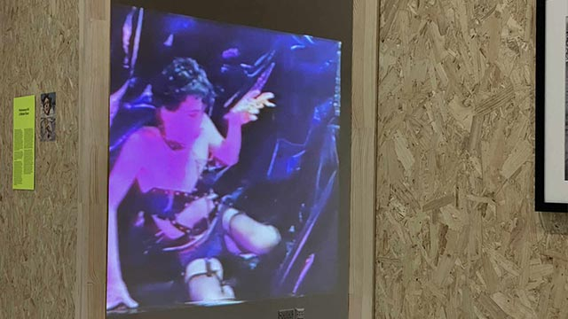
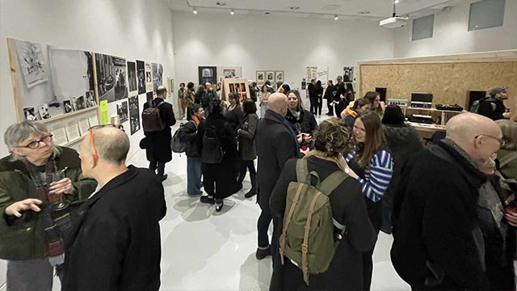
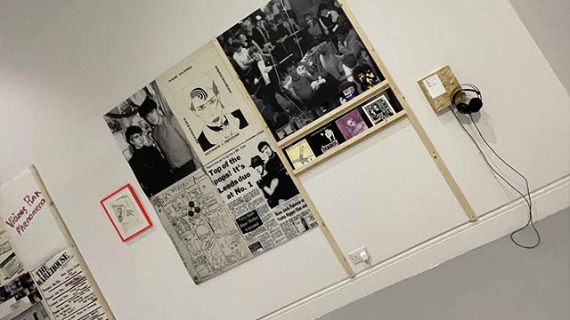
Multidisciplinary art practice at Leeds Polytechnic
In 1977 when I began my journey from mining village to art school. It was given that in addition to painting, life drawing, and dislocating your shoulder lugging around A1-sized art folders, I would join an art school band. That point came in 1980, when I was accepted on the Fine Art Degree course at Leeds Polytechnic and began regular rehearsals with like minded art students. Leeds Fine Art was housed in an open-plan studio the size of an aircraft-hangar, with a mezzanine leading to a series of small painting cubicles, a life-drawing studio and a sound studio. The main hangar also housed a self-contained performance area that was painted black and equipped with seating and theatre lighting.
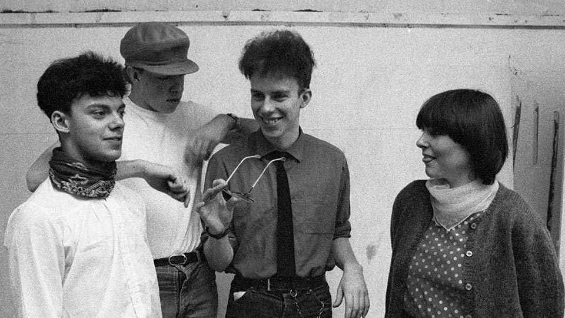
Smart Cookies 1981 (L-R) Paul Fillingham, Chris Richards, Russ Fisher, Rose Macpherson.
About the Leeds Fine Art Studio
Leeds Fine Art promoted an ethos of multi-disciplinary art practice, enabling students to move between visual arts, conceptual arts and performance – often blurring the lines between these disciplines. Our lecturers, largely informed by their own practice and involvement in sixties counter culture, encouraged rebellion and experimental forms of creative expression.
I was a proficient draftsman and painter when I arrived at Leeds. I had previous experience of exhibiting works publicly and some recognition for a mural painted for the National Union of Mineworkers. So, it’s revealing that I didn’t do a single life drawing at Leeds, I abandoned the persona of the solitary artist and found myself drawn to more collaborative work like art performance and music. This activity was fuelled by an increasing interest in music technology and popular culture. It also represented something that was relatable to young people in the communities where I grew up, and the clubland that we frequented – places like Leeds Warehouse and the Cosmo Club, or back in my native Nottingham, Rock City and The Palais.
The Fine Art Sound Studio had fallen into disrepair after the departure of its founder, lecturer John Darling. But the space was at least defined as an area in which students could experiment with sound. When the department needed someone to manage sound studio bookings, I volunteered, placing myself and fellow student Russ Fisher in a good position to make week-long bookings, every term.
What tribe are you? Goth, Futurist, Indie or Experiemental?
At the weekends, we were already jamming at student halls in Becket Park and were aware of the legacy of indie, new-wave, goth, and futurist acts; people like Fad Gadget and Soft Cell (we rarely used the phrase ‘punk’). These acts, along with Poly contemporaries, and others from the Uni and Jacob Kramer College had managed to cross-over from art education into the world of popular music, as championed by BBC Radio One DJ, John Peel. We attended their performances at local venues, and were familiar with events like the Futurama festival. There were lots of bootleg cassette tapes doing the rounds and some of these groups were already releasing records.
Russ and I consumed their output voraciously: Collectable singles, bootleg tapes of live gigs, fanzines and pop music press articles; our sketchbooks were full of this stuff. Booking the Fine Art Sound Studio meant that we could invite collaborators to join us, including my guitarist friend Chris Richards, who was studying graphic design at Liverpool Polytechnic, and keyboard player Rose Macpherson, a non-student who worked with local church charities. Chris and I had met on an A-Level Arts Course at Clarendon College Nottingham. We shared the same taste in music and had made some recordings that were tongue-in-cheek parodies. After leaving Nottingham we exchanged cuttings from newspapers and pop magazines, photos and sketches, in the form of mail art, and Chris became an unofficial member of Leeds Fine Art department, regularly working alongside us in the sound studio.
Throughout 1981, we shifted from experimental sounds to composing songs, paving the way for the Smart Cookies which became more clearly identified as a pop band. The arrival of bass player Bob Smith `(who joined the art course when we were into our second year) completed the line-up. He also had a Dr Rhythm drum machine, which was subsequently replaced with a Roland TR808 Rhythm Composer (financed by my student grant) – to create our drum sound.
Curator’s Callout
In January 2025, Professor Gavin Butt and Curator Ruth Viccars, outlined their plans for the show and put out a call for archive material. Luckily, I had converted most of my student black and white photographs to digital formats years ago, which meant they were readily available.
A note on student photography in the 70s and 80s
The democratised image-making and sharing of today is a far cry from the process we endured as students. DEveloping photographs involved crawling head-first into a sleeping bag to transfer the exposed film from the 35mm film canister into a developing tank, which inevitably cross-threaded just as you were running out of air.
The next step could be completed in daylight and involved pouring noxious chemicals into the top of the black plastic developing tank. Immersion times were counted on a wrist watch. Once the fixative had been washed away, you could open the tank and extract the film and cut it into manageable strips of about six images per strip. These were hung up to dry and could be held against the light, giving a clue to which images were good enough to print.
Print and Reveal
Next up was the printing process which required a photographic enlarger. I purchased mine from my woodwork teacher when I was a school. This impressive device combined with chemical trays and a pack of photo-paper were used after nightfall.
Printing photographs was always more forgiving than film processing as you could work with a red safelight. This was typically done to the sound of The John Peel Show on Radio One, rocking the stinking chemicals back and forth, over the photopaper until the images revealed themselves. The following morning, the prints would be dry and we were able to select a suitable image for a demo cassette cover or local fanzine. Image-making did not come easily before the advent of Desktop Publishing (DTP).
Life after Art School
Art students were usually ill prepared for employment in the outside world, though the experience with emerging music technology (the Musical Instrument Digital Interface - MIDI) did expose us to the first generation of personal computers. I eventually found my niche in audio-visual production, desktop publishing, and later, interactive design. It was some years until I returned to Leeds, working in a web design company from 1998 to 2010, and later as a digital consultant.
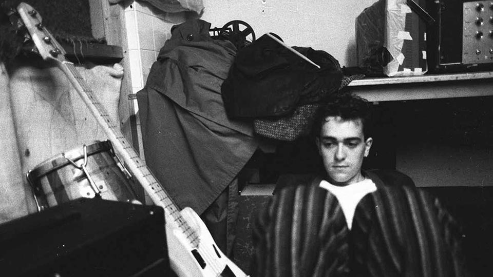
Leeds Fine Art student, Smart Cookies bass player, Bob Smith takes time out between takes.
Fresh eyes
Viewing the student images today, I find myself noticing details that would have been invisible at the time. I’ve also become immune to the shock of the haircuts and clothing that we wore back then. It was all very DIY and tribal in the 80’s. Pop music meant something and was an important part of our identity. I can’t help but wonder what today's students make of it all? And from this perspective, it was fascinating to relinquish curatorial control to another cohort, who would perhaps see things very differently.
Collaboration, Collage and Camaraderie
As Leeds Fine Art students, image-making, collaborative performance and camaraderie were as important as making the music. Writing lyrics based on newspaper headlines and overhead phrases was in essence, collage. And we consciously followed the cut-up techniques pioneered by Dadaist Tristran Tzara, beat poet William Burroughs, the performance artist Brion Gysin, and of course, pop musician David Bowie.
The cut-up method, favoured by guitarist Chris Richards and myself, involved the random selection of annotated slips of paper from a box, then assembling them to construct interesting phrases. Since some of the words were lifted from diaries, they included the names of our friends and acquaintances. The effect of juxtaposing names against random phrases was sometimes comical, other times magical, and on a few occasions quite chilling, where the emerging sentence read like magic curse!
I had a huge collection of pocket-sized sketchbooks, each numbered and prefaced with the phrase ‘Trivia for the Initiated’. These books were filled with cuttings, drawings, observations, and drum notation for the band’s Roland TR808 Rhythm Composer. Decades later, this physical activity would manifest itself as social media posts; capturing, adapting and sharing media clips. Who knew, that most of the world's population would one day, engage in this activity on mobile phones?
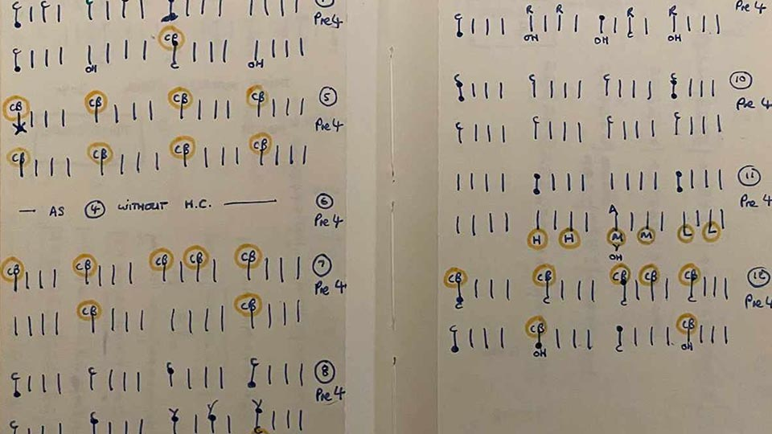
Drum notation for the Roland TR808 Rhythm Composer.
Cookie Crumble and Computer Chips
The Smart Cookies aesthetic was largely playful, and rooted in the sounds and iconography of our childhood. We had fun in the studio, an approach which seemed different to that of our predecessors. This shift from agitprop to pop is documented in Gavin’s book No Machos or pop Stars.
Our band went through several line-ups. In education, largely shaped by creative differences, but without the protection of the art school environment our friendships were tested to the limit. Our creative endeavours were ultimately crushed by the indifference of the major recording labels and the need to earn a living.
In 1984, I sold the TR808, purchased a BBC Microcomputer and learned BASIC programming. Shortly afterwards, I discovered the Apple Macintosh which has remained a creative tool ever since.
Around 1986, Chris and I started making music again, working with a real drummer and incorporating video and low-cost digital samplers into live performance. Then again in 2004, when we released a Smart Cookies EP on the Apple iTunes Store. The EP was recorded as a duo and mastered on a Mac using Logic Pro software. That was twenty years ago! Today, digital music technology is readily available and relatively low cost compared with the huge fortunes we spent as students. I’m also too preoccupied with other creative projects to even think anout reviving the Smart Cookies, which is probably a good thing!
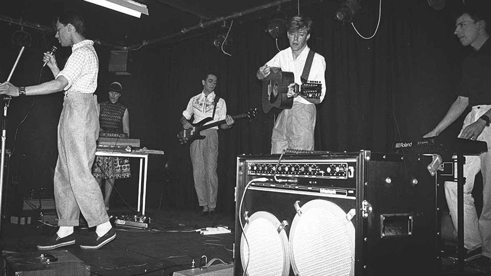
Smart Cookies live performance at Leeds Polytechnic.
The tapes
Most of our early output was released on music cassettes, which were duplicated, then distributed to Club and Radio DJs, fanzines, friends, and also sold through Leeds' legendary Jumbo Records.
Our art school demo tapes received praise from the music press in 1983-84, but most of these recordings have now disappeared from the public domain. In an effort to give a flavour of the Cookies sound, below is a selection of Smart Cookies recordings. Some were recorded on our trusty Hitachi TRK8190E ghetto blaster in the wonderful, chaotic, squalor that was the Leeds Poly Fine Art Sound Studio. Most of these tracks were included in the listening posts at the Mixed-up exhibition. Smart Cookies, Loud and Lonely is also featured on the compilation LP and CD The Art School Dance Goes On: Leeds Post-Punk 1977-84’ released by Caroline True Records in 2023.

- 01 Sky Monkey Music
- 02 Satellite
- 03 Finance of Romance